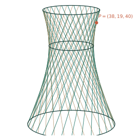

\(A=2\pi\int_a^b f(x)\sqrt{1+f'(x)^2}\,dx\) for \(y=f(x)\ge0\) rotated about the \(x\)-axis
Entering answers
Type numbers or formulas: fractions, decimals, pi, e, sqrt(...), sin(...), cos(...), exp(...), log(...). Use ^ for powers and radians for angles; separate vector components with commas.
Any equivalent form is accepted: 3/2, 1.5, and 6/4 are all the same answer, and so are (4/3)pi r^3 and 4 pi r^3/3.
Decimals must be correct to two decimal places (answers smaller than 0.1 need two significant digits). Exact forms such as 6pi sqrt(37) are always fine.
LaTeX such as \frac{1}{2}, \sqrt{2}, \pi, and \phi also works. A potential function may differ from ours by a constant. Units are shown beside each box.
Hints and solutions are built into the page, and nothing you type is sent anywhere: your answers and notes stay in this browser. This is an ungraded practice site.
The tropics are the belt of Earth between latitudes \(23.44^\circ\) S and \(23.44^\circ\) N. Latitude is the angle, measured at Earth’s center, between a place and the equator. The tropics are where the Sun can be directly overhead at some time of year, and their edge, \(23.44^\circ\), equals Earth’s axial tilt: the angle between its spin axis and the perpendicular to its orbit. On a globe the tropics look like a thin belt around the middle. How much of the planet do they really cover?
Earth is a perfect sphere. The real Earth is flattened at the poles by about 0.3%.
The enclosing cylinder is an imaginary surface that touches the sphere all around the equator.
3So the model is
Earth: the sphere \(x^2+y^2+z^2=R^2\), \(R=6371\) km, centered at Earth’s center with the positive \(z\)-axis through the North Pole
Tropics: latitudes \(23.44^\circ\) S to \(23.44^\circ\) N. Latitude \(L\) sits at height \(z=R\sin L\), so the tropics are the band \(|z|\le R\sin23.44^\circ\)
The model, side view through the poles: Earth as a sphere of radius \(R\), the tropics as a band of height \(h=2R\sin23.44^\circ\), and the enclosing cylinder. The arrows show horizontal projection from the sphere out to the cylinder.
First, on paper
Write \(\Phi(\phi,\theta)\) for the sphere, with \(\phi\) measured from the North Pole, and give its domain.
Describe the grid curves (\(\theta\) fixed; \(\phi\) fixed) in geographic terms.
Explain why this chart is not regular at the poles, even though Earth is not pointed there.
Before (b): predict which of ten equally thick slabs, cut by parallel planes, has the most surface area.
Find the lateral area of the cylinder \(\Psi(\theta,z)=(R\cos\theta,R\sin\theta,z)\) between heights \(z_1<z_2\).
Whiteboard kit ↓An image with the diagram, model, this task, and blank work areas. Add it to your group’s shared whiteboard as a background.
aFor the sphere chart \(\Phi(\phi,\theta)\), with \(\phi\) measured from the North Pole and \(R=6371\) km, enter \(\|\Phi_\phi\times\Phi_\theta\|\) as a function of phi.
A step in the right direction
bTwo horizontal planes a distance h apart both cut the sphere. Find the area of the part of the sphere between them, with R = 6371 km and h in km. Enter it as a function of h.
A step in the right direction
cUsing part (b), what fraction of Earth’s surface lies in the tropics? Enter the exact value or a decimal rounded to two places.
A step in the right direction
View full solution +
Follow the reasoning
Parametrization: \(\Phi(\phi,\theta)=(R\sin\phi\cos\theta,R\sin\phi\sin\theta,R\cos\phi)\) on \(0\le\phi\le\pi\), \(0\le\theta\le2\pi\). Fixing \(\theta\) gives a meridian (a line of longitude). Fixing \(\phi\) gives a parallel (the line of latitude \(90^\circ-\phi\)).
Cross product: \(\Phi_\phi=(R\cos\phi\cos\theta,R\cos\phi\sin\theta,-R\sin\phi)\) and \(\Phi_\theta=(-R\sin\phi\sin\theta,R\sin\phi\cos\theta,0)\) are perpendicular, with lengths \(R\) and \(R\sin\phi\). So \(\|\Phi_\phi\times\Phi_\theta\|=R^2\sin\phi=6371^2\sin\phi\) km2.
The poles: the norm is zero at \(\phi=0\) and \(\phi=\pi\) because all the meridians meet there, just as longitude is undefined at a pole. A different chart, such as the graph \(z=\sqrt{R^2-x^2-y^2}\) near the North Pole, is regular there, so the sphere itself is smooth.
Band area: for a band \(z_1\le z\le z_2\), substituting \(z=R\cos\phi\) turns \(R^2\sin\phi\,d\phi\,d\theta\) into \(R\,dz\,d\theta\). The area is \(\int_0^{2\pi}\!\int_{z_1}^{z_2}R\,dz\,d\theta=2\pi R(z_2-z_1)=2\pi Rh\), with \(R=6371\) km.
Cylinder and slabs: the cylinder has \(\|\Psi_\theta\times\Psi_z\|=R\), so its band between \(z_1\) and \(z_2\) also has area \(2\pi R(z_2-z_1)\). This is Archimedes’ hat-box theorem. So all ten equally thick slabs have the same area, \(4\pi R^2/10\); the equatorial slab does not win.
Tropics: the tropics have \(h=2R\sin23.44^\circ\), so the fraction is \(\dfrac{2\pi R\cdot2R\sin23.44^\circ}{4\pi R^2}=\sin23.44^\circ\approx0.398\). Interpretation: almost 40% of Earth’s surface is tropical, even though the belt looks thin on a globe.
Final answers
a.\(40589641 \sin{\left(\phi \right)}\) km2
b.\(12742 \pi h\) km2
c.\(\sin{\left(0.130222222222222 \pi \right)}\)
Discussion
Because horizontal projection onto the cylinder preserves area. By the hat-box theorem every thin band keeps its area, and so does every longitude wedge of that band, so every region keeps its area. Shapes still distort: at latitude L, east–west lengths stretch by 1/cos L while north–south lengths shrink by cos L, and their product, the area factor, stays 1.
Think it through
Lambert’s cylindrical equal-area map moves each point horizontally, straight away from Earth’s axis, onto the enclosing cylinder, then unrolls the cylinder flat. Why does that map show Greenland and Africa with correct relative areas, even though shapes near the poles look squashed?
Saved on this browser · Discussion prompt, not automatically graded
ALMA, at 5000 m altitude in Chile’s Atacama Desert, links dozens of dish antennas into one radio telescope. Each 12 m dish is a curved mirror that reflects incoming radio waves to a single point, the focus. The mirror is built from many precisely shaped panels, so its builders need to know how much curved surface it has. That is more than the area of the flat 12 m circle across its rim, called the aperture. How much mirror surface does one dish have?
Building the model
1From the real world
Primary mirror diameter: \(12\) m
Primary focal length: \(f=4.8\) m (focal ratio \(f/D=0.4\))
The mirror is a perfect paraboloid with its vertex at the origin and its axis along the \(z\)-axis.
Panel gaps and the central hole are ignored, so the mirror covers the whole disk \(r\le6\) m.
3So the model is
Mirror: \(z=\dfrac{r^2}{4f}=\dfrac{r^2}{19.2}\) m over the disk \(r\le6\) m, where \(r=\sqrt{x^2+y^2}\) is the distance from the axis in meters
Rim depth: \(z=36/19.2=1.875\) m
Rays parallel to the axis reflect through the focus \((0,0,4.8)\)
The model, cross-section through the dish axis: the paraboloid \(z=r^2/19.2\) with a 12 m aperture and 1.875 m rim depth. Rays parallel to the axis reflect through the focus \((0,0,4.8)\).
First, on paper
Parametrize the mirror as a graph over the disk, \((x,y,(x^2+y^2)/19.2)\), and with polar coordinates; give each domain.
Decide whether the area should include the flat aperture disk.
Before (c): rotate the profile \(y=\sqrt{19.2x}\), \(0\le x\le1.875\), about the \(x\)-axis (the dish on its side) and set up \(A=2\pi\int y\sqrt{1+y'^2}\,dx\).
After (c): explain why this integral converges although \(y'\) is unbounded at \(x=0\), and check that it matches (b).
Whiteboard kit ↓An image with the diagram, model, this task, and blank work areas. Add it to your group’s shared whiteboard as a background.
aWrite the mirror as the graph \(z=g(x,y)=(x^2+y^2)/19.2\). Enter the area factor \(\sqrt{1+g_x^2+g_y^2}\) as a function of \(r=\sqrt{x^2+y^2}\).
A step in the right direction
bFind the area of the curved mirror surface over the disk r ≤ 6 m, not counting the flat aperture disk. Enter the exact value or round to two decimal places.
A step in the right direction
cIn the surface-of-revolution setup (the profile \(y=\sqrt{19.2x}\), \(0\le x\le1.875\), rotated about the \(x\)-axis), simplify the integrand \(y\sqrt{1+y'^2}\) as a function of x.
A step in the right direction
View full solution +
Follow the reasoning
Two parametrizations: the graph form \((x,y,(x^2+y^2)/19.2)\) on the disk \(x^2+y^2\le36\), and the polar form \((r\cos\theta,r\sin\theta,r^2/19.2)\) on \(0\le r\le6\), \(0\le\theta\le2\pi\). Only the curved mirror counts. The flat aperture disk across the rim is open sky, not mirror.
Area factor: \(g_x=x/9.6\) and \(g_y=y/9.6\), so \(\sqrt{1+g_x^2+g_y^2}=\sqrt{1+r^2/92.16}\). In polar coordinates the area element \(dx\,dy\) also becomes \(r\,dr\,d\theta\).
Surface of revolution: with \(y=\sqrt{19.2x}\), the slope \(y'=19.2/(2y)\) blows up at \(x=0\). But \(y\sqrt{1+y'^2}=\sqrt{y^2+92.16}=\sqrt{19.2x+92.16}\) stays bounded, so the improper integral converges. It gives \[A=2\pi\int_0^{1.875}\sqrt{19.2x+92.16}\,dx\approx123.51\ \mathrm{m}^2,\] the same area as before.
Interpretation: area belongs to the surface, not to the parametrization. The dish needs about \(123.5\) m2 of mirror surface, about 9% more than the \(36\pi\approx113.10\) m2 aperture.
Final answers
a.\(\sqrt{0.0108506944444444 r^{2} + 1}\)
b.\(39.3149184903645 \pi\) m2
c.\(\sqrt{19.2 x + 92.16}\) m
Discussion
The amount of panel surface to order would depend on the engineer’s choice of coordinates, which is absurd. Area is a property of the surface itself: any two regular, one-to-one parametrizations are related by a change of variables whose Jacobian converts one area element exactly into the other.
Think it through
Two different parametrizations gave the same area. What would go wrong for the people ordering mirror panels if area depended on the parametrization?
Saved on this browser · Discussion prompt, not automatically graded
Many power stations have tall concrete cooling towers with a narrow waist. In a natural-draft tower, warm air rises through the tall shell on its own, without fans. The tower at Niederaussem, Germany, was described in 2001 as the world’s tallest natural-draft cooling tower. It is 200 m high, yet its curved concrete shell is only about 24 cm thick. A waisted shape like this can be traced out entirely by straight lines. Which surface is it, which lines lie on it, and what is its tangent plane at a survey point?
The shell is exactly the surface traced by \(\Phi\) below. Real towers only approximate this shape.
The narrowest radius \(a=38\) m and the vertical scale \(c=80\) m are chosen to match the base radius and the height.
Height \(z\) is measured from the narrowest level, so the ground is at \(z=-80\sqrt3\approx-138.6\) m.
3So the model is
Shell: \(\Phi(t,s)=\big(a(\cos s-t\sin s),\ a(\sin s+t\cos s),\ ct\big)\), in meters
Domain: \(0\le s\le2\pi\) (\(s\) an angle in radians), \(-\sqrt3\le t\le2.5-\sqrt3\) (\(t\) dimensionless)
\(a=38\) m, \(c=80\) m

The model surface drawn only with straight lines: teal lines come from \(\Phi\) and brown lines from the second family. Height 200 m, base radius 76 m, narrowest radius 38 m at \(z=0\). The marker \(P\) is orange.
First, on paper
Eliminate \(t\) and \(s\) to identify the surface by an equation in \(x,y,z\). Check the base radius and the total height.
Describe the grid curves with \(s\) fixed and with \(t\) fixed.
For (a) and (b): show how you find the parameters of \(P\), then compute \(\Phi_t\) and \(\Phi_s\) there.
After (c): check your plane using the upper half as a graph, \(z=c\sqrt{(x^2+y^2)/a^2-1}\).
Whiteboard kit ↓An image with the diagram, model, this task, and blank work areas. Add it to your group’s shared whiteboard as a background.
aA survey marker sits on the shell at P = (38, 19, 40), in meters. Enter the parameters (t, s) of P, with 0 ≤ s < 2π.
A step in the right direction
bEnter the normal vector \(\Phi_t\times\Phi_s\) at the marker \(P\).
A step in the right direction
cEnter the tangent plane to the shell at P, solved for z as a function of x and y.
A step in the right direction
View full solution +
Follow the reasoning
Identify the surface: \(x^2+y^2=a^2[(\cos s-t\sin s)^2+(\sin s+t\cos s)^2]=a^2(1+t^2)\) and \(t=z/c\), so \(\frac{x^2+y^2}{38^2}-\frac{z^2}{80^2}=1\), a hyperboloid of one sheet. At \(t=-\sqrt3\) the radius is \(38\cdot2=76\) m, matching the base, and the height is \(c(2.5-\sqrt3+\sqrt3)=200\) m.
Grid curves: fixing \(s\) gives \(a(\cos s,\sin s,0)+t(-a\sin s,a\cos s,c)\), a straight line. Fixing \(t\) gives a horizontal circle of radius \(a\sqrt{1+t^2}\). The curved shell is woven from straight lines, so straight reinforcing bars can follow it.
Parameters of \(P\): \(z=40\) gives \(t=0.5\). Then \(\cos s-0.5\sin s=1\) and \(\sin s+0.5\cos s=0.5\) force \(s=0\), not the polar angle \(\arctan(1/2)\) of \((38,19)\).
Tangent vectors and normal: \(\Phi_t=(-a\sin s,a\cos s,c)=(0,38,80)\) and \(\Phi_s=(-a(\sin s+t\cos s),a(\cos s-t\sin s),0)=(-19,38,0)\), so \(\mathbf N=(-3040,-1520,722)=38(-80,-40,19)\).
Tangent plane: \(-80(x-38)-40(y-19)+19(z-40)=0\), that is, \(z=(80x+40y-3040)/19\). Graph check: \(z_x=\dfrac{c\,x/a^2}{\sqrt{(x^2+y^2)/a^2-1}}=\dfrac{80}{19}\) and \(z_y=\dfrac{40}{19}\) at \(P\), which gives the same plane.
Interpretation: the shell is steep at the marker. Moving horizontally straight away from the axis, the plane rises \(\sqrt{80^2+40^2}/19\approx4.7\) m per meter, a slope of about \(78^\circ\).
Final answers
a.\(\left(0.5,\ 0\right)\)
b.\(\left(-3040,\ -1520,\ 722\right)\) m2
c.\(\frac{80 x}{19} + \frac{40 y}{19} - 160\) m
Discussion
Two: one from each family, so the hyperboloid is doubly ruled. Builders can therefore run straight reinforcing bars or formwork along the surface in two directions, making a curved shell from straight pieces.
Think it through
A second family, \(\big(a(\cos s+t\sin s),\,a(\sin s-t\cos s),\,ct\big)\), traces the same surface. How many straight lines on the surface pass through each point, and why might builders care?
Saved on this browser · Discussion prompt, not automatically graded
Great Zimbabwe, a UNESCO World Heritage site, was the capital of a southern African kingdom that flourished between roughly the 11th and 15th centuries. Inside its walled Great Enclosure stands a solid Conical Tower, about 9 m tall, built of granite blocks without mortar, the paste that usually binds stones together. Its sloping side tapers toward the top, like a cone with its tip cut off. How much stone surface faces the outside world, and does the missing tip cause trouble for the parametrization?
Building the model
1From the real world
Height: about \(9\) m (30 ft)
Base diameter: about \(5.5\) m (18 ft), so base radius \(2.75\) m
The tower is an exact truncated cone with top radius \(1.25\) m.
Its sloping side is extended upward to an imaginary apex, so one formula describes the whole cone.
3So the model is
Full cone: \(\Phi(u,v)=(u\cos v,\ u\sin v,\ 16.5-6u)\), \(0\le u\le2.75\), \(0\le v\le2\pi\), with \(u\) the distance from the axis in meters and \(v\) the angle around it
Tower: the part with \(1.25\le u\le2.75\), that is, \(0\le z\le9\) m
The radius shrinks \(1.5\) m over the \(9\) m height, so \(z\) falls \(6\) m per meter of radius
The model: the tower is the truncated cone \(1.25\le u\le2.75\), and the dashed lines extend it to the imaginary apex \(u=0\), 7.5 m above the top.
First, on paper
Write the curved face as a graph \(z=g(x,y)\) over its shadow in the \(xy\)-plane, and show that the area factor is constant.
Explain why the curved area is a fixed multiple of the shadow’s area, as for a tilted plane.
Decide whether a lime-wash estimate for the curved face should include the flat top disk.
After (c): check with the cone formula \(\pi RL\), subtracting the missing tip.
Whiteboard kit ↓An image with the diagram, model, this task, and blank work areas. Add it to your group’s shared whiteboard as a background.
aFor the cone \(\Phi(u,v)\) in the model, enter the normal vector \(\Phi_u\times\Phi_v\) as a function of u and v.
A step in the right direction
bWhere does Φ fail to be regular, and what does that mean for the tower?
A step in the right direction
cFind the area of the tower’s curved stone face, excluding the flat top disk.
A step in the right direction
View full solution +
Follow the reasoning
Graph form: the curved face is \(z=16.5-6\sqrt{x^2+y^2}\) over the annulus \(1.25\le\sqrt{x^2+y^2}\le2.75\). Then \(g_x^2+g_y^2=36\), so the area factor is the constant \(\sqrt{37}\), and the curved area is \(\sqrt{37}\) times the shadow’s area, just as a tilted plane multiplies area by a constant.
Normal vector: \(\Phi_u=(\cos v,\sin v,-6)\) and \(\Phi_v=(-u\sin v,u\cos v,0)\) give \(\mathbf N=(6u\cos v,6u\sin v,u)\), with \(\|\mathbf N\|=u\sqrt{37}\), which is zero only at \(u=0\).
Regularity: the apex \(u=0\) is a genuine geometric corner, since no parametrization gives it a tangent plane. But it lies at \(z=16.5\) m, outside the \(9\) m tower. The truncated tower is regular everywhere; its top and bottom circles are boundary edges.
Area: \(A=\int_0^{2\pi}\int_{1.25}^{2.75}u\sqrt{37}\,du\,dv=\pi\sqrt{37}\,(2.75^2-1.25^2)=6\pi\sqrt{37}\approx114.66\) m2. This is \(\sqrt{37}\) times the shadow’s area \(6\pi\), as the graph form predicts.
Cone-formula check: \(\pi RL-\pi r\ell=\pi(2.75)(2.75\sqrt{37})-\pi(1.25)(1.25\sqrt{37})=6\pi\sqrt{37}\), where \(L\) and \(\ell\) are the slant lengths of the full cone and of the missing tip.
Interpretation: about \(115\) m2 of curved stone faces outward. A lime-wash estimate for the curved face should leave out the flat top; including it would add \(1.5625\pi\approx4.91\) m2.
Final answers
a.\(\left(6 u \cos{\left(v \right)},\ 6 u \sin{\left(v \right)},\ u\right)\) m
b. Only at u = 0, the apex 7.5 m above the tower; the tower itself is regular everywhere.
c.\(6 \sqrt{37} \pi\) m2
Discussion
At a pole only the chart fails; at the apex the surface itself has a corner. Another chart of the sphere, such as a graph over the tangent plane at the pole, has a nonzero normal there, so the sphere is smooth. At the cone’s apex no parametrization gives a tangent plane, because normals from different sides point in different directions.
Think it through
The sphere chart in the Earth problem also had a zero cross product at its poles. Why is that harmless for the sphere but a real corner for the cone?
Saved on this browser · Discussion prompt, not automatically graded
Problem 05Extension
The plasma ring inside ITER
ITER, the international fusion experiment under construction in southern France, will hold a plasma hotter than the Sun’s core inside a ring-shaped magnetic cage. Fusion means joining light atomic nuclei to release energy, and a plasma is a gas so hot that its atoms break apart into charged particles. The plasma ring has the shape of a torus, the surface of a doughnut. How much surface does the ring have, and how much more of it lies on the outer side, away from the central axis, than on the inner side?
The model: a circular tube of radius \(r\) whose center runs around a circle of radius \(R\). Left: top view. Right: a cut through the central axis, with the angle \(\phi\) measured around the tube.
First, on paper
Describe the grid curves and what \(R\) and \(r\) measure.
Before (a): show that \(\Phi_\theta\) and \(\Phi_\phi\) are perpendicular.
After (b): interpret the area as (tube circumference) × (distance traveled by the tube’s center).
Whiteboard kit ↓An image with the diagram, model, this task, and blank work areas. Add it to your group’s shared whiteboard as a background.
aFor the torus \(\Phi(\theta,\phi)\) in the model, with \(R=6.2\) m and \(r=2\) m, enter \(\|\Phi_\theta\times\Phi_\phi\|\) as a function of phi.
A step in the right direction
bFind the total surface area of the model plasma torus.
A step in the right direction
cThe outer half of the torus (cos φ > 0, farther from the central axis) and the inner half (cos φ < 0) have different areas. Enter the area of the outer half minus the area of the inner half.
A step in the right direction
View full solution +
Follow the reasoning
Grid curves: fixing \(\theta\) gives a circle of radius \(r\), a cross-section of the tube. Fixing \(\phi\) gives a horizontal circle of radius \(R+r\cos\phi\). \(R\) is the distance from the central axis to the tube’s center, and \(r\) is the tube’s radius.
Tangent vectors: \(\Phi_\theta=(-(R+r\cos\phi)\sin\theta,(R+r\cos\phi)\cos\theta,0)\) and \(\Phi_\phi=(-r\sin\phi\cos\theta,-r\sin\phi\sin\theta,r\cos\phi)\) have zero dot product and lengths \(R+r\cos\phi\) and \(r\). So the norm is \(r(R+r\cos\phi)=2(6.2+2\cos\phi)\) m2.
Total area: \(A=\int_0^{2\pi}\!\int_0^{2\pi}r(R+r\cos\phi)\,d\phi\,d\theta=4\pi^2Rr=(2\pi r)(2\pi R)=49.6\pi^2\approx489.5\) m2. This is the tube’s circumference times the distance its center travels (Pappus’ theorem).
Outer minus inner: the outer half has area \(2\pi r(\pi R+2r)\approx295.0\) m2 and the inner half \(2\pi r(\pi R-2r)\approx194.5\) m2, a difference of \(8\pi r^2=32\pi\approx100.5\) m2. Interpretation: about 60% of the model plasma’s surface faces outward, because the outer side sweeps around a larger circle.
Final answers
a.\(4 \cos{\left(\phi \right)} + 12.4\) m2
b.\(49.6 \pi^{2}\) m2
c.\(32 \pi\) m2
Discussion
Elongation: the real plasma is taller than it is wide. ITER’s plasma cross-section is D-shaped and about 1.7 times taller than it is wide, so it encloses much more volume than a circle of radius 2.0 m: 490 × 1.7 ≈ 833 m³, close to the published 837 m³. In this model the volume and the area happen to share the number 49.6π², because V = A·r/2 and r/2 = 1 m.
Think it through
The same newsletter lists a plasma volume of 837 m³, while a circular torus with these radii has volume 2π²Rr² ≈ 490 m³. What feature of the real plasma explains the difference?
Saved on this browser · Discussion prompt, not automatically graded
Field notes
Where the numbers come from
Each card lists the published values this week’s problems use, with a link to the original source and a CSV download. Everything else in a problem is a labeled assumption.
Published planetary parameters
NASA Earth Fact Sheet
NASA NSSDC Earth Fact Sheet, accessed November 17, 2026. The volumetric mean radius is the radius of a sphere with Earth’s volume; the real Earth is slightly flattened at the poles.
Sugimoto et al. (NAOJ ALMA project office), ALMA Memo 574, 2007, Table 1. The memo states that the ACA 12 m antenna shares the optics parameters of the 12 m antennas used for ALMA. The tabulated values are for the 12 m prototype design.
Busch, Harte, Krätzig and Montag, Structural Engineering International 11(2), 2001, describe the 200 m tower. The 152 m base diameter and 0.24 m wall thickness come from co-author W. B. Krätzig’s summary on shellbuckling.com. The narrowest radius and exact shape in the problem are assumed.
Wikipedia’s Great Zimbabwe article, citing P. Garlake, Great Zimbabwe (1973), p. 29, gives the dimensions below. Other descriptions differ by about a meter. The top radius used in the problem is assumed.
International Atomic Energy Agency, ITER EDA Newsletter Vol. 9 No. 10, lists the plasma parameters below. The real plasma cross-section is D-shaped, not circular.


.jpg){kind=link}